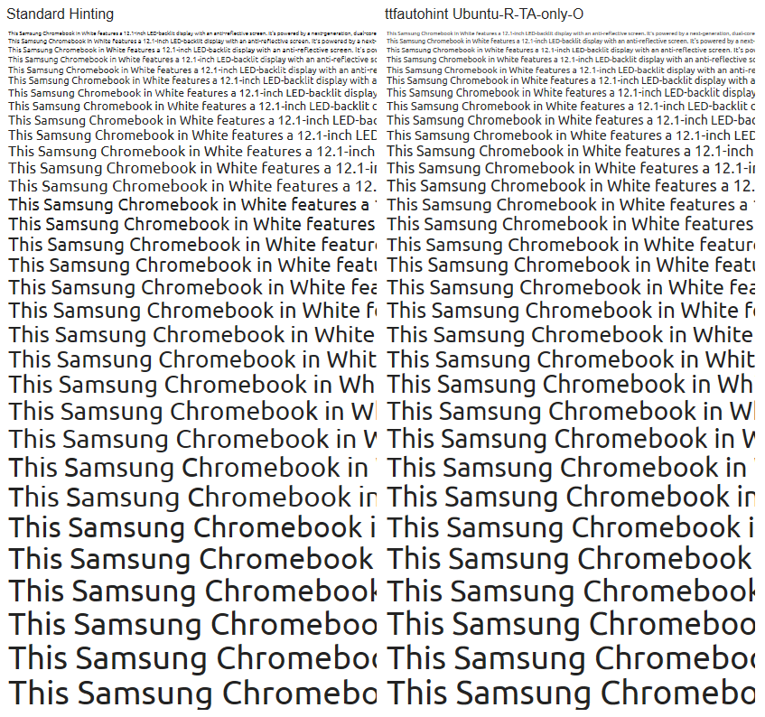
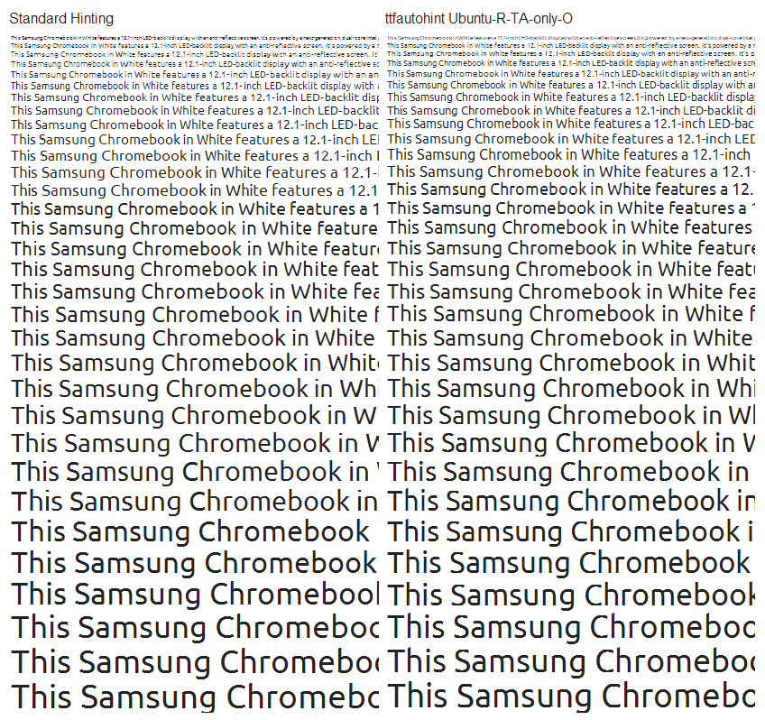
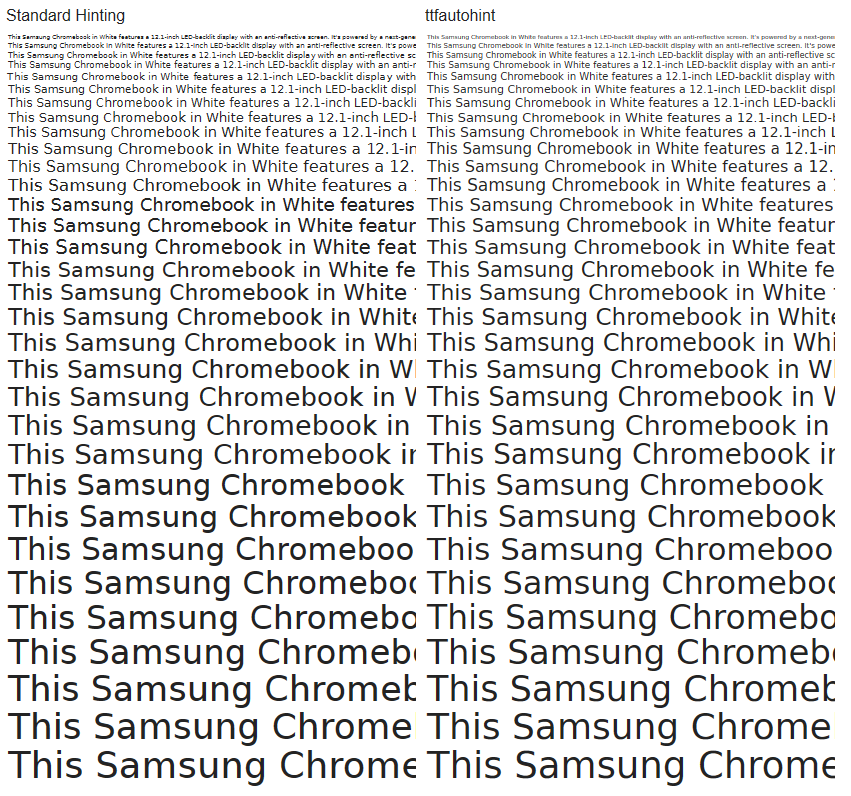
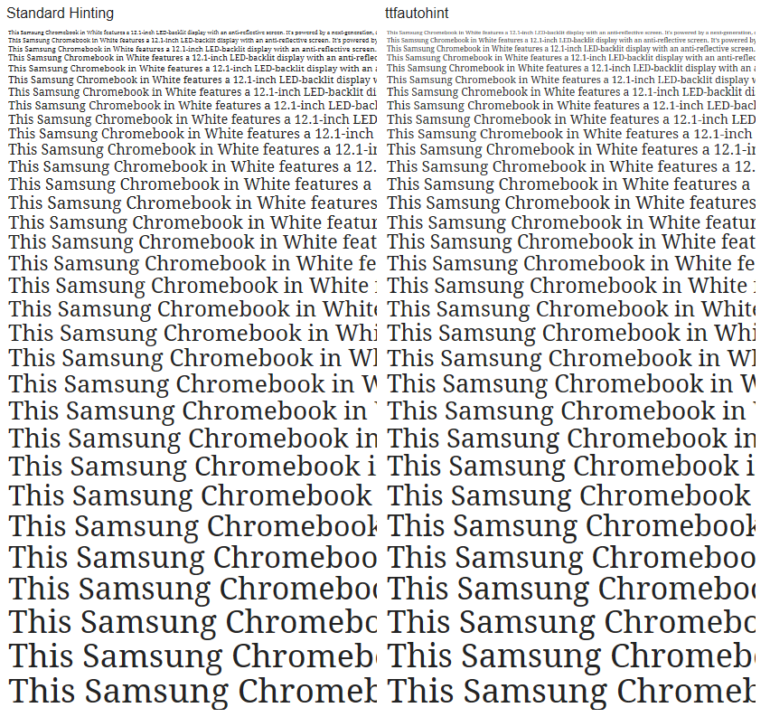

ttfautohint's goal is a 99% automated hinting process for web fonts, acting as a platform for finely hand-tuned hinting.

8th March 2013
Today I've released version 0.95. This is a small maintainance release without major news (see here for more).
Currently, I'm heavily working on FreeType (including payed work) without having much time to continue the development of ttfautohint. I estimate that this dormant phase will end in about two months, so stay tuned!
28th November 2012
This time, I have two issues to talk about:
-
Version 0.94 is out. It adds two new options to better control the vertical dimensions of hinted glyphs to avoid clipping on Windows in case the usWinAscent and usWinDescent values from the font's ‘OS/2’ table can't be adjusted (for whatever reasons). As usual, look here for more information.
-
In the last twelve months, there was a lot of progress in the development of ttfautohint. However, there is still a large list of improvements I would like to work on so that this tool becomes more versatile and useful. To make this happen I start a new funding drive, and I ask you for financial support!
10th October 2012
Here comes version 0.93, right in time for the talk given by Dave Crossland and Eben Sorkin at the atypi conference in Hong Kong!
On the functionality side, it brings a new option to hint composite glyphs differently, greatly reducing the bytecode size of the created hints. I'm waiting for reports whether this option works for most fonts; in case this is true I'll make it the default. So please test!
The list of other changes can be found here. Among other things, the GUI version of ttfautohint has a new layout (based on suggestions from Frederik Berlaen).

7th August 2012
I've found quite an embarassing bug in the bytecode produced by ttfautohint, causing bad rounding. All users should upgrade to version 0.92.
12th July 2012
Version 0.91 is out! This mainly brings better support for GDI ClearType. For other, minor improvements, please go to this page for more.
7th June 2012
After a long hiatus due to personal reasons, followed by intensive work on the documentation, I'm happy to release version 0.9.
While I was able to significantly reduce the generated bytecode, the GDI issues haven't been solved yet, unfortunately, to be fixed in a forthcoming release. For other, minor improvements, please go to this page for more.
6th April 2012
Thanks to a very generous donation from Extensis WebINK, my pledgie campaign has reached its goal. Kudos to all of you who have donated and supported me!
In a few weeks I'll do a new release; this time with smaller output fonts due to a reduced size of the generated bytecode, and with better support for GDI ClearType.
30th March 2012
This page now uses the Roboto font for display.
Karsten Lücke again provided a static binary of ttfautohint's command line version for OS X.
21st March 2012
Version 0.8 is available.
This release brings various minor improvements; see this page for more.
To whet your appetite: Here is a snapshot of the GUI :-)

5th February 2012
Version 0.7 is available – we have a GUI!
The Qt framework is used to provide a uniform interface for all supported platforms.
Below you can find a link for downloading Windows binaries. If you want to have better installation support (including a package for Mac), please donate!
2nd January 2012
Version 0.6.1 is available.
This release should fix problems with version 0.6; additionally, dropout mode has been activated.
25th December 2011
My Xmas present to you: version 0.6. Thanks to all of you who are still donating!
This version greatly improves handling of composite glyphs. It also implements option -p to pre-hint a font with the original hints before processing it.
19th November 2011
Karsten Lücke provided a static binary for OS X – no need to install FreeType! It was generated under version 10.5.8, but should run with version 10.7 also.
9th November 2011
The Google Web Fonts has contributed an additional $3,000! I have now raised two thirds of my goal!
I hope other corporate font developers, especially those with large font catalogs, who will benefit substantially from this work, will consider making a contribution of a thousand dollars.
I have just released version 0.5, including a Windows binary. You can read the project roadmap here.
18th October 2011
In September we have raised over $2,000 from the public, $7,000 each from Google and FontLab, together with a copy of FontLab 5, and received from Microsoft the Visual TrueType file format specification. This will allow designers to refine ttfautohint's results further using VTT, if I reach my $30,000 goal!
The collected money so far enables me to intensively work on ttfautohint for the next three months. The two main issues I'm going to handle are
-
fixing the bytecode to make it work reliably with Apple's TrueType engines (I've already started with that, and I estimate to provide a new release in about two weeks)
-
writing a GUI for easier control
In case you have special wishes, now it's the right time to tell me! Please look into the TODO file and check whether your idea is already covered!
Introduction
Werner Lemberg is making it easy for type designers to create web fonts that look great on Windows, with ttfautohint.
Hinting TrueType fonts can be a slow and expensive process, and many fonts lack good hinting totally because they are converted to TrueType from another font format.
ttfautohint solves this, by building on FreeType's autohinting system. It brings the excellent quality of FreeType rendering to platforms which don't use FreeType, yet require hinting for text to look good – like Microsoft Windows.
Across Windows rendering environments today, ttfautohint fonts look best with DirectWrite ClearType enabled. This is the default for Windows 7. Good visual results are also seen in recent MacOS X versions and GNU/Linux systems that do use FreeType for rendering. Work is now underway to improve quality of older Windows ‘GDI’ rendering.
The main part of the project is a code library, which is described in detail in the source code file src/ttfautohint.h. There are utility programs with both command-line and GUI interfaces, ready to use today.
The goal of the project is to generate a ‘first pass’ of hinting that font developers can refine further for ultimate quality.

The animation above shows how the hints created by ttfautohint get applied to the dollar glyph of Liberation Serif Regular at 19 pixels per em, using FontForge's TrueType hinting bytecode debugger. (You can view the image directly to see it in original size.)
Roadmap
The project started in 2010 when Dave Crossland suggested the idea of the program. Werner was able to start development thanks to financial support from the Google Web Fonts team.
He soon produced results that received some warm attention from professional type designers.
Werner is now working full time on the project while seeking financial support from the wider typography community to continue this work.
Hinting TrueType fonts is a very time consuming and expensive process for type designers. Producing high quality hinting for most glyphs in a font, and allowing them to fine-tune the results by hand will simplify the lives of all type designers. This little program is set to improve the quality of web typography!
The TODO file in the source code repository provides an extensive list of things which will be eventually handled in one or another way. Here is a short list of essential items:
-
Add ways to fine-tune the results – finer control over blue zones and other details of the hinting process follow naturally after a GUI is in place.
-
Add full OpenType Feature support – currently, all glyphs which can't be directly addressed with a character code in the ‘cmap’ table are handled with a fallback mechanism only.
-
Add support for all the world's writing systems – since FreeType's autohinting system supports the Arabic and CJK (Chinese, Korean, Japanese) writing systems, ttfautohint could do so too. (So far the primary goal is to make ttfautohint work well with the latin script.)
-
Add hooks for other tools – to allow smooth integration with various font editors.
-
Emit the actions in the high-level hinting command languages – those used in other tools, such as Visual TrueType (VTT) or FontLab, instead of only emitting final low-level bytecode. This will allow designers to fine tune the results by hand – essential for those tricky glyphs that require intelligent decisions by a human
-
Make the library itself installable.
Visual Samples
Vernon Adams has done extensive testing of ttfautohint, and has documented this in detail over at his blog, New Typography. While doing so, he created a large set (ZIP) of test images. A few of them are shown below, with image descriptions always above an image:
Ubuntu Regular, Windows DirectWrite ClearType:
Ubuntu regular, GDI ClearType. This image clearly shows the aggressive colour filtering. With ttfautohint, curved outline extrema not aligned to a pixel border are not handled well, giving some sizes a bitmap-like appearance:
Vera Regular, Windows DirectWrite ClearType:
Droid Serif Regular, Windows DirectWrite ClearType:
Finally, here two font files of Ubuntu Regular so that you can compare the hinting results by yourself:
Ubuntu-R.ttf
Ubuntu-TTFautohint-R.ttf
Note that Ubuntu-TTFautohint-R.ttf has been generated with version 0.5 of ttfautohint; it has also been manually edited (using ttx) to change the font name so that it is possible to use the original version and the version processed with ttfautohint in parallel.
Matt Wiebe has tested the font VAG Rounded; he presents the results on his blog.
How It Works
A detailed description of the autohinter inside FreeType can be found here. Although these web pages are in need of an update, the basic principles of the autohinting process haven't changed. There is one exception: The autohinter no longer tries to provide good hinting for monochrome rasterization. Instead, it expects anti-aliasing with 256 gray levels, which became standard with Windows 98.
A scholarly paper published in the EuroTeX 2003 proceedings, titled Real-Time Grid Fitting of Typographic Outlines, gives further insight into the autohinting system's inner workings.
In the above links, one aspect of the autohinting process is missing: The various steps performed by the autohinter (called actions) can be described as high-level operations, for example “aligning a given edge to a given blue zone,” or “linking this edge to another one within a given distance.” The ttfautohint library hooks into these actions and transforms them into bytecode routines.
Similar to most TrueType hints, the autohint actions depend on the device resolution. Consequently, ttfautohint walks over a large range of ppem values (8 to 1000 ppem by default) and collects the actions as sets. A typical glyph outline needs three to four sets (covering the whole range), but sometimes more than ten are necessary.
Intentionally, ttfautohint adds hints only along the y-axis. The Anti-Grain research describes some of the reasons behind this decision. While the article is quite old, the mentioned ideas are still valid.
The ttfautohint library contains a copy of FreeType's ‘autofit’ module, reformatted and using a different function prefix, and with slight extensions for hooks into hinting actions. It therefore inherits the same dual-licensing as FreeType; you can choose between the GNU Public License (GPL) Version 2 and the FreeType License (FTL.)
Contact
Werner Lemberg (wl@gnu.org) is Technical Lead, and does all the programming. He is a professional classical musician and lives in Vienna, Austria.
Dave Crossland (dave@understandingfonts.com) is the Project Manager, and wrote and art directed the promotional video at the top of this page. He is a professional type designer and lives in London, England.
Andy Ellis (hello@fadeinfadeout.co.uk) designed and produced the promotion video. He is a professional motion graphic designer and lives in London, England.
Download
Current version: 0.95 (8th March 2013)
Binaries
Windows
ttfautohint 0.95 (both command line and GUI)
Apple
ttfautohint 0.95 (currently, command line only;
thanks to Karsten Lücke for creating this – it
has been compiled under OS X 10.5.8, but should run
with newer versions also).
Source Code and Documentation
The latest source package of ttfautohint, including documentation in HTML, PDF, and text format, can be downloaded either from Savannah or from SourceForge.
The documentation is available online also.
All development takes places within a public git repository; see the repo.or.cz repository homepage for details.
Note: A prerequisite for compiling the library is FreeType version 2.4.5 or newer; see FreeType's download page for more information.
Compile ttfautohint for Mac OS X, including the GUI. While this link uses version 0.92 of ttfautohint, it works the same with recent versions also: simply replace ‘0.92’ with the current version number.
This page is maintained by Werner Lemberg.